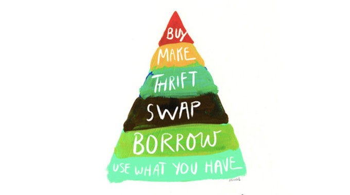

Ways To Be More Sustainable
1. Buy from Sustainable fashion brands
2. Get clothes at thrift stores
3. Buy only what you need

Listed above are some little things you can do in order to become more sustainable when looking and
shopping for clothes. Buying from sustainable companies such as Everlane and Patagonia ensures that
the process of making your clothes was in a sustainable ways. Whereas shopping at stores such as H&M,
Forever21, and Zara ensures that your products were mass produced and therefore not sustainable.
Slow fashion is sustainable fashion and fast fashion is not sustainable. Getting clothes from the thrift
stores allows you to further the life clothes rather than them getting thrown away. The longer the
clothes lifespan the more sustainable is it. Buying only the clothes that you need is another great
sustainable action. Over consuming leads to clothes being thrown away and companies continuing to
mass produce. In terms of sustainability less is more and durability is the way to go. Think before you
shop, become more of a conscious shopper, and use the buyerachy of needs.
| Sustainable | Recycle | Reuse | Reduce |
| Not Sustainable | Overconsume | Throw away | fast fashion |
As you can see above there are various sustainable and non sustainable actions you can do on a daily
Basis such as recyling!I know for the University of Georgia campus you are able to recycle at every trash can
so I would advise that you take you time and seperate your trash in order to be more sustainable and help the planet.
Other way is to reuse products instead of just throwing them away. See if you can find mutiple uses out of your
products. There is always opportunity to optimize your products and reduce your carbon footprint on the planet.
Now for the being non sutainable, you can see that overconsuming is not the way to go because it contributes
to large landfills that are all throughout the country. People buy way too much and end up throwning things away
or people will sadly by alot which increases demand and causes stores to over produce. Either way doing too much of anything
is horrible for the environment. Lastly fast fashion companies such as Zara and Forever21 are huge factors to
unsustainable living and the decrease in the overall well being of the environment.